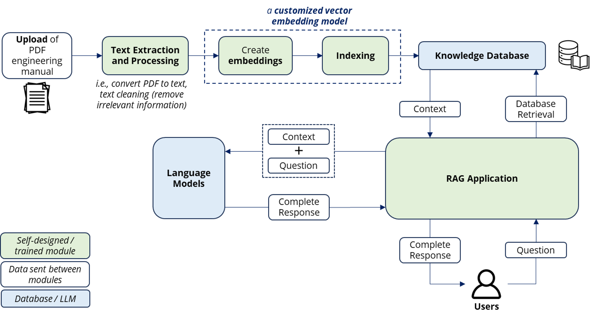

Intelligent Document Processing System
Project Overview
This project outlines the development of an intelligent system designed to process and retrieve information from electric vehicle (EV) battery manuals. Sponsored by the Advanced Remanufacturing and Technology Centre (ARTC), the system addresses challenges engineers face when navigating complex and lengthy Original Equipment Manufacturer (OEM) manuals. By providing quick access to critical information, the system aims to improve efficiency and reduce errors during the disassembly and maintenance of end-of-life EV batteries.
Natural Language Processing and System Approach
The system employs advanced Natural Language Processing (NLP) techniques, including a Retrieval-Augmented Generation (RAG) pipeline, to efficiently process the manuals. Key steps include:
- Text Extraction and Cleaning: Extracting text from PDF manuals, splitting it into individual sentences, identifying sections like warnings and instructions, and preparing the text for analysis.
- Vector Embeddings: Converting processed data into vector embeddings, which represent the context and meaning of the text, enabling efficient search and retrieval.
- Conversational Interface: Engineers interact with the system via a conversational interface where they ask questions in natural language. The system matches these queries to the most relevant sections of the manual and provides contextually accurate responses.
Business Problem Statement
The growing demand for remanufacturing, repurposing, and recycling of end-of-life products like EV batteries has created a need for engineers to refer to complex OEM manuals containing critical disassembly and safety information. These manuals are often difficult to navigate, making the process time-consuming and error-prone. As a result, operational inefficiencies arise, and there is an increased risk of mistakes during disassembly and maintenance. An intelligent system is needed to enable engineers to easily access and query relevant information, improving productivity and reducing errors.
Technical Problem Statement
Engineering manuals are often lengthy and text-heavy, making it challenging for engineers to quickly find specific disassembly instructions or safety procedures. The system, using a Retrieval-Augmented Generation (RAG) pipeline, allows engineers to upload manuals and query specific information in real-time, offering accurate responses to questions such as "What are the potential dangers during removal of the service plug?" This approach enhances both operational efficiency and safety.
System Design and Approach
The system's architecture consists of four key modules:
- Text Extraction and Processing: Users upload the engineering manual, which is then pre-processed. This involves text extraction, sentence splitting, cleaning, and structuring.
- Vector Embeddings and Knowledge Database Creation: A vector embedding model is used to create sentence-level embeddings, which are then indexed to form the knowledge database. Pre-trained and fine-tuned models are evaluated for this purpose.
- RAG Pipeline: The Retrieval-Augmented Generation pipeline is implemented to answer users' queries. The system's retrieval methodology and the chosen language model ensure accurate and contextually relevant responses.
- User Interface and Query Processing: The entire system is encapsulated within a conversational user interface. Engineers can upload manuals and ask queries related to specific manual content.
The intelligent system provides a practical solution to the inefficiencies engineers face when working with technical manuals, offering significant improvements in productivity, safety, and accuracy.